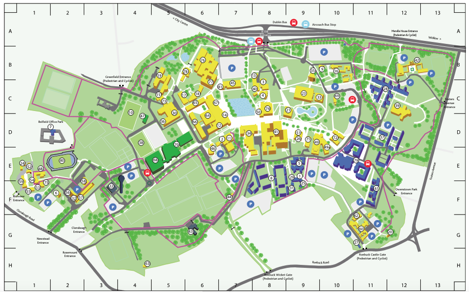
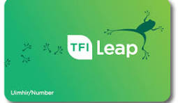
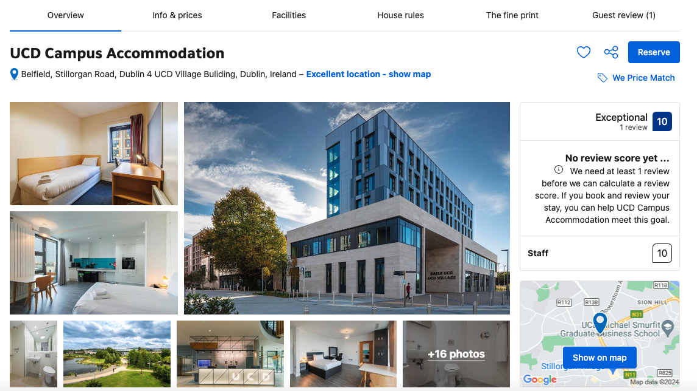
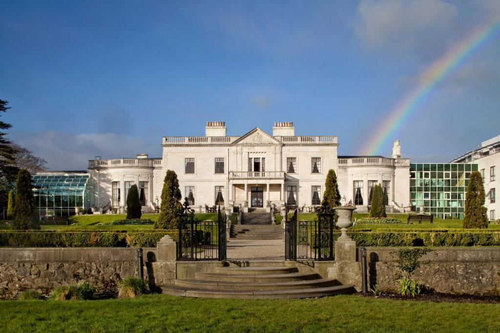
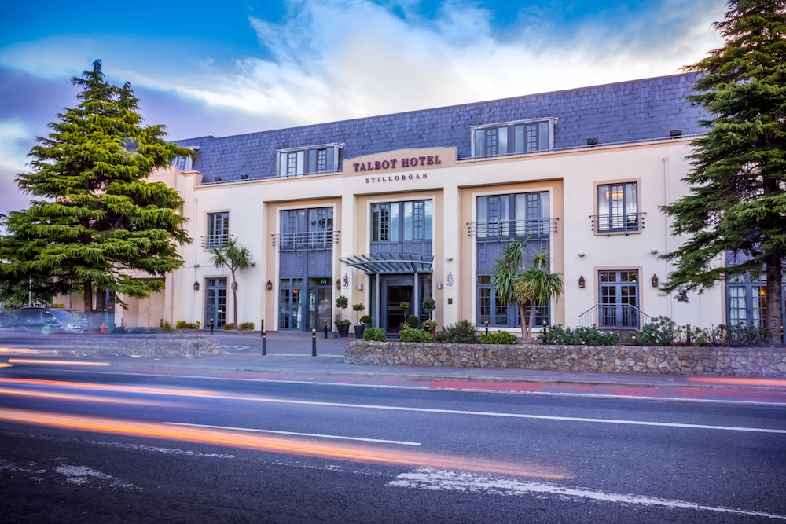
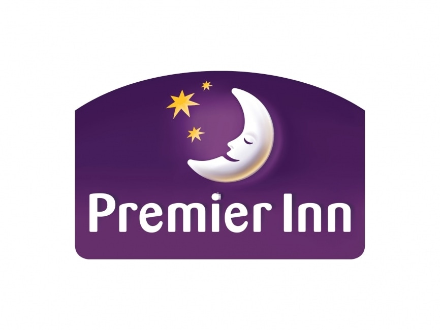
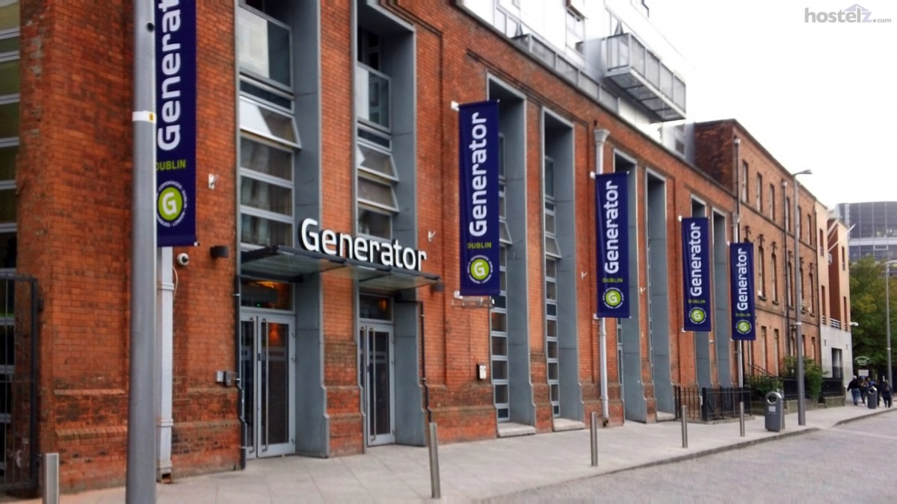
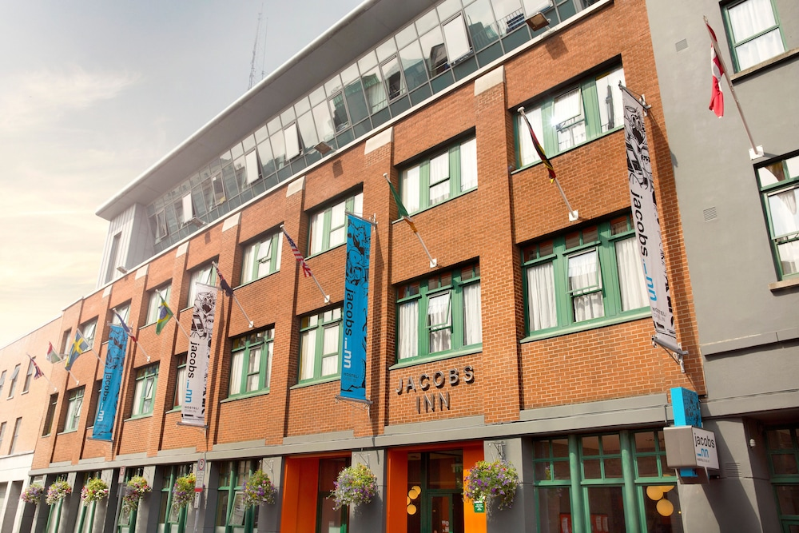

Local Information
Please find information on the venue and accomodation.
The Venue
UCD is one of Europe's leading research-intensive universities; an environment where undergraduate education, masters and PhD training, research, innovation and community engagement form a dynamic spectrum of activity. UCDs main campus is an extensive parkland estate of 133 hectares in South Dublin. Details of available transport links can be found here.
The venue for the summer school is the UCD School of Computer Science. This is labelled as building 18 on the map below. on the map below.

Leap Card
 Leap Cards are a prepaid travel card that is the easiest way to pay your fare on public transport around Ireland. It is valid on most TFI services and commercial bus operators throughout Ireland. It’s more convenient because you don’t have to carry cash or queue at ticket machines and it can save you money because fares are usually up to 30% less than cash single tickets.
TFI 90 Minute Fare
When you have a leap card, you can travel anywhere in Dublin for 90 minutes for just €2. This includes all
Dublin Bus, Go-Ahead Ireland, the Luas (tram) and the DART/Commuter Services (local train).
Accommodation Options
Much of the local accommodation is available through Booking.com. Occassionally, you can find better deals on their own websites.
On Campus:
|  |
UCD Accommodation UCD has extensive student residences, but it is mostly rented out to groups attending English Language Camps over the summer. What remains is available through Booking.com at a rate of around €145 per day. |
Nearby Hotels:
|  |
Radisson St Helens (5 star) Closest external hotel to UCD. Very popular with limited availability. Prices start around €200 per night, but can rise quicky and steeply. |
|  |
Talbot Hotel, Stillorgan (4 star) This hotel is one of the closest hotels to UCD. It is around a 20-30 minute walk or around 10 minutes on a bus. Prices range from around €145 per night upwards depending on availability. |
Alternatives:
|  |
Premier Inn Hotel chain with accommodation at various locations. Rooms are €150+ per night. Would require a bus journey to get to UCD - duration depends on location. |

|
AirBnb AirBnb is very popular in Ireland and there are many options. Rooms can be rented for €80-100 per night. For those of you in groups, entire apartments can be rented for similar or better rates. Set "University College Dublin" as the location when you search. |
|  |
Generator Hostel A popular hostel in the city centre. Shared dormatories are available for around €50 per night. Bus to UCD is around 10-20 minutes walk. The bus takes 30-60 minutes depending on traffic. |
|  |
Jacobs Inn Hostel Cheaper alternative in the city centre. Around 30-60mins journey to UCD on the Dart or via Bus. Shared dormatories available from around €40 per night. |